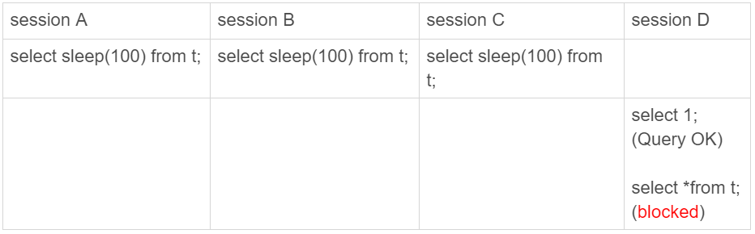

我在第25和27篇文章中，和你介绍了主备切换流程。通过这些内容的讲解，你应该已经很清楚了：在一主一备的双M架构里，主备切换只需要把客户端流量切到备库；而在一主多从架构里，主备切换除了要把客户端流量切到备库外，还需要把从库接到新主库上。
主备切换有两种场景，一种是主动切换，一种是被动切换。而其中被动切换，往往是因为主库出问题了，由HA系统发起的。
这也就引出了我们今天要讨论的问题：怎么判断一个主库出问题了？
你一定会说，这很简单啊，连上MySQL，执行个select 1就好了。但是select 1成功返回了，就表示主库没问题吗？
select 1判断
实际上，select 1成功返回，只能说明这个库的进程还在，并不能说明主库没问题。现在，我们来看一下这个场景。
set global innodb_thread_concurrency=3;
CREATE TABLE `t` (
`id` int(11) NOT NULL,
`c` int(11) DEFAULT NULL,
PRIMARY KEY (`id`)
) ENGINE=InnoDB;
insert into t values(1,1)

我们设置innodb_thread_concurrency参数的目的是，控制InnoDB的并发线程上限。也就是说，一旦并发线程数达到这个值，InnoDB在接收到新请求的时候，就会进入等待状态，直到有线程退出。
这里，我把innodb_thread_concurrency设置成3，表示InnoDB只允许3个线程并行执行。而在我们的例子中，前三个session 中的sleep(100)，使得这三个语句都处于“执行”状态，以此来模拟大查询。
你看到了， session D里面，select 1是能执行成功的，但是查询表t的语句会被堵住。也就是说，如果这时候我们用select 1来检测实例是否正常的话，是检测不出问题的。
在InnoDB中，innodb_thread_concurrency这个参数的默认值是0，表示不限制并发线程数量。但是，不限制并发线程数肯定是不行的。因为，一个机器的CPU核数有限，线程全冲进来，上下文切换的成本就会太高。
所以，通常情况下，我们建议把innodb_thread_concurrency设置为64~128之间的值。这时，你一定会有疑问，并发线程上限数设置为128够干啥，线上的并发连接数动不动就上千了。
产生这个疑问的原因，是搞混了并发连接和并发查询。
并发连接和并发查询，并不是同一个概念。你在show processlist的结果里，看到的几千个连接，指的就是并发连接。而“当前正在执行”的语句，才是我们所说的并发查询。
并发连接数达到几千个影响并不大，就是多占一些内存而已。我们应该关注的是并发查询，因为并发查询太高才是CPU杀手。这也是为什么我们需要设置innodb_thread_concurrency参数的原因。
然后，你可能还会想起我们在第7篇文章中讲到的热点更新和死锁检测的时候，如果把innodb_thread_concurrency设置为128的话，那么出现同一行热点更新的问题时，是不是很快就把128消耗完了，这样整个系统是不是就挂了呢？
实际上，在线程进入锁等待以后，并发线程的计数会减一，也就是说等行锁（也包括间隙锁）的线程是不算在128里面的。
MySQL这样设计是非常有意义的。因为，进入锁等待的线程已经不吃CPU了；更重要的是，必须这么设计，才能避免整个系统锁死。
为什么呢？假设处于锁等待的线程也占并发线程的计数，你可以设想一下这个场景：
- 线程1执行begin; update t set c=c+1 where id=1, 启动了事务trx1， 然后保持这个状态。这时候，线程处于空闲状态，不算在并发线程里面。
- 线程2到线程129都执行 update t set c=c+1 where id=1; 由于等行锁，进入等待状态。这样就有128个线程处于等待状态；
- 如果处于锁等待状态的线程计数不减一，InnoDB就会认为线程数用满了，会阻止其他语句进入引擎执行，这样线程1不能提交事务。而另外的128个线程又处于锁等待状态，整个系统就堵住了。
下图2显示的就是这个状态。

这时候InnoDB不能响应任何请求，整个系统被锁死。而且，由于所有线程都处于等待状态，此时占用的CPU却是0，而这明显不合理。所以，我们说InnoDB在设计时，遇到进程进入锁等待的情况时，将并发线程的计数减1的设计，是合理而且是必要的。
虽然说等锁的线程不算在并发线程计数里，但如果它在真正地执行查询，就比如我们上面例子中前三个事务中的select sleep(100) from t，还是要算进并发线程的计数的。
在这个例子中，同时在执行的语句超过了设置的innodb_thread_concurrency的值，这时候系统其实已经不行了，但是通过select 1来检测系统，会认为系统还是正常的。
因此，我们使用select 1的判断逻辑要修改一下。
查表判断
为了能够检测InnoDB并发线程数过多导致的系统不可用情况，我们需要找一个访问InnoDB的场景。一般的做法是，在系统库（mysql库）里创建一个表，比如命名为health_check，里面只放一行数据，然后定期执行：
mysql> select * from mysql.health_check;
使用这个方法，我们可以检测出由于并发线程过多导致的数据库不可用的情况。
但是，我们马上还会碰到下一个问题，即：空间满了以后，这种方法又会变得不好使。
我们知道，更新事务要写binlog，而一旦binlog所在磁盘的空间占用率达到100%，那么所有的更新语句和事务提交的commit语句就都会被堵住。但是，系统这时候还是可以正常读数据的。
因此，我们还是把这条监控语句再改进一下。接下来，我们就看看把查询语句改成更新语句后的效果。
更新判断
既然要更新，就要放个有意义的字段，常见做法是放一个timestamp字段，用来表示最后一次执行检测的时间。这条更新语句类似于：
mysql> update mysql.health_check set t_modified=now();
节点可用性的检测都应该包含主库和备库。如果用更新来检测主库的话，那么备库也要进行更新检测。
但，备库的检测也是要写binlog的。由于我们一般会把数据库A和B的主备关系设计为双M结构，所以在备库B上执行的检测命令，也要发回给主库A。
但是，如果主库A和备库B都用相同的更新命令，就可能出现行冲突，也就是可能会导致主备同步停止。所以，现在看来mysql.health_check 这个表就不能只有一行数据了。
为了让主备之间的更新不产生冲突，我们可以在mysql.health_check表上存入多行数据，并用A、B的server_id做主键。
mysql> CREATE TABLE `health_check` (
`id` int(11) NOT NULL,
`t_modified` timestamp NOT NULL DEFAULT CURRENT_TIMESTAMP,
PRIMARY KEY (`id`)
) ENGINE=InnoDB;
/* 检测命令 */
insert into mysql.health_check(id, t_modified) values (@@server_id, now()) on duplicate key update t_modified=now();
由于MySQL规定了主库和备库的server_id必须不同（否则创建主备关系的时候就会报错），这样就可以保证主、备库各自的检测命令不会发生冲突。
更新判断是一个相对比较常用的方案了，不过依然存在一些问题。其中，“判定慢”一直是让DBA头疼的问题。
你一定会疑惑，更新语句，如果失败或者超时，就可以发起主备切换了，为什么还会有判定慢的问题呢？
其实，这里涉及到的是服务器IO资源分配的问题。
首先，所有的检测逻辑都需要一个超时时间N。执行一条update语句，超过N秒后还不返回，就认为系统不可用。
你可以设想一个日志盘的IO利用率已经是100%的场景。这时候，整个系统响应非常慢，已经需要做主备切换了。
但是你要知道，IO利用率100%表示系统的IO是在工作的，每个请求都有机会获得IO资源，执行自己的任务。而我们的检测使用的update命令，需要的资源很少，所以可能在拿到IO资源的时候就可以提交成功，并且在超时时间N秒未到达之前就返回给了检测系统。
检测系统一看，update命令没有超时，于是就得到了“系统正常”的结论。
也就是说，这时候在业务系统上正常的SQL语句已经执行得很慢了，但是DBA上去一看，HA系统还在正常工作，并且认为主库现在处于可用状态。
之所以会出现这个现象，根本原因是我们上面说的所有方法，都是基于外部检测的。外部检测天然有一个问题，就是随机性。
因为，外部检测都需要定时轮询，所以系统可能已经出问题了，但是却需要等到下一个检测发起执行语句的时候，我们才有可能发现问题。而且，如果你的运气不够好的话，可能第一次轮询还不能发现，这就会导致切换慢的问题。
所以，接下来我要再和你介绍一种在MySQL内部发现数据库问题的方法。
内部统计
针对磁盘利用率这个问题，如果MySQL可以告诉我们，内部每一次IO请求的时间，那我们判断数据库是否出问题的方法就可靠得多了。
其实，MySQL 5.6版本以后提供的performance_schema库，就在file_summary_by_event_name表里统计了每次IO请求的时间。
file_summary_by_event_name表里有很多行数据，我们先来看看event_name='wait/io/file/innodb/innodb_log_file’这一行。
图中这一行表示统计的是redo log的写入时间，第一列EVENT_NAME 表示统计的类型。
接下来的三组数据，显示的是redo log操作的时间统计。
第一组五列，是所有IO类型的统计。其中，COUNT_STAR是所有IO的总次数，接下来四列是具体的统计项， 单位是皮秒；前缀SUM、MIN、AVG、MAX，顾名思义指的就是总和、最小值、平均值和最大值。
第二组六列，是读操作的统计。最后一列SUM_NUMBER_OF_BYTES_READ统计的是，总共从redo log里读了多少个字节。
第三组六列，统计的是写操作。
最后的第四组数据，是对其他类型数据的统计。在redo log里，你可以认为它们就是对fsync的统计。
在performance_schema库的file_summary_by_event_name表里，binlog对应的是event_name = "wait/io/file/sql/binlog"这一行。各个字段的统计逻辑，与redo log的各个字段完全相同。这里，我就不再赘述了。
因为我们每一次操作数据库，performance_schema都需要额外地统计这些信息，所以我们打开这个统计功能是有性能损耗的。
我的测试结果是，如果打开所有的performance_schema项，性能大概会下降10%左右。所以，我建议你只打开自己需要的项进行统计。你可以通过下面的方法打开或者关闭某个具体项的统计。
如果要打开redo log的时间监控，你可以执行这个语句：
mysql> update setup_instruments set ENABLED='YES', Timed='YES' where name like '%wait/io/file/innodb/innodb_log_file%';
假设，现在你已经开启了redo log和binlog这两个统计信息，那要怎么把这个信息用在实例状态诊断上呢？
很简单，你可以通过MAX_TIMER的值来判断数据库是否出问题了。比如，你可以设定阈值，单次IO请求时间超过200毫秒属于异常，然后使用类似下面这条语句作为检测逻辑。
mysql> select event_name,MAX_TIMER_WAIT FROM performance_schema.file_summary_by_event_name where event_name in ('wait/io/file/innodb/innodb_log_file','wait/io/file/sql/binlog') and MAX_TIMER_WAIT>200*1000000000;
发现异常后，取到你需要的信息，再通过下面这条语句：
mysql> truncate table performance_schema.file_summary_by_event_name;
把之前的统计信息清空。这样如果后面的监控中，再次出现这个异常，就可以加入监控累积值了。
小结
今天，我和你介绍了检测一个MySQL实例健康状态的几种方法，以及各种方法存在的问题和演进的逻辑。
你看完后可能会觉得，select 1这样的方法是不是已经被淘汰了呢，但实际上使用非常广泛的MHA（Master High Availability），默认使用的就是这个方法。
MHA中的另一个可选方法是只做连接，就是 “如果连接成功就认为主库没问题”。不过据我所知，选择这个方法的很少。
其实，每个改进的方案，都会增加额外损耗，并不能用“对错”做直接判断，需要你根据业务实际情况去做权衡。
我个人比较倾向的方案，是优先考虑update系统表，然后再配合增加检测performance_schema的信息。
最后，又到了我们的思考题时间。
今天，我想问你的是：业务系统一般也有高可用的需求，在你开发和维护过的服务中，你是怎么判断服务有没有出问题的呢？
你可以把你用到的方法和分析写在留言区，我会在下一篇文章中选取有趣的方案一起来分享和分析。感谢你的收听，也欢迎你把这篇文章分享给更多的朋友一起阅读。
上期问题时间
上期的问题是，如果使用GTID等位点的方案做读写分离，在对大表做DDL的时候会怎么样。
假设，这条语句在主库上要执行10分钟，提交后传到备库就要10分钟（典型的大事务）。那么，在主库DDL之后再提交的事务的GTID，去备库查的时候，就会等10分钟才出现。
这样，这个读写分离机制在这10分钟之内都会超时，然后走主库。
这种预期内的操作，应该在业务低峰期的时候，确保主库能够支持所有业务查询，然后把读请求都切到主库，再在主库上做DDL。等备库延迟追上以后，再把读请求切回备库。
通过这个思考题，我主要想让关注的是，大事务对等位点方案的影响。
当然了，使用gh-ost方案来解决这个问题也是不错的选择。
评论区留言点赞板：
@曾剑、@max 同学提到的备库先做，再切主库的方法也是可以的。